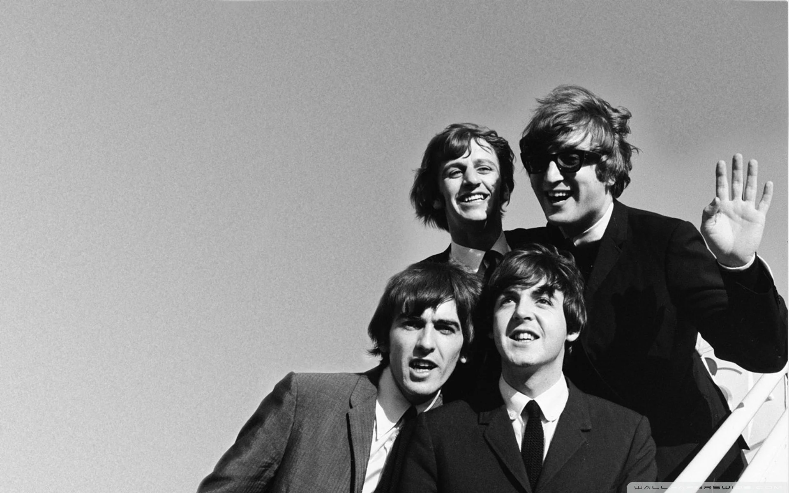

The Beatles
The Beatles (pronunciado, también conocida en el mundo hispano como los Beatles, fue una banda de rock británica formada en Liverpool durante los años 1960, estando integrada desde 1962 a su separación en 1970 por John Lennon, Paul McCartney, George Harrison y Ringo Starr. Es ampliamente considerada como la banda más influyente de todos los tiempos, siendo parte fundamental en el desarrollo del movimiento contracultural de la década de 1960 y el reconocimiento de la música popular como forma de arte. Enraizada en el skiffle, la música beat y el rock and roll de los años 1950, su sonido incorporaría a menudo elementos de la música clásica y del pop tradicional, entre otros, de forma innovadora en sus canciones; la banda posteriormente llegaría a trabajar con un extenso rango de estilos musicales, yendo desde las baladas y la música de India, hasta la psicodelia y el hard rock. Como pioneros en las formas de grabación, composición y presentación artística; la naturaleza de su enorme popularidad, que había emergido primeramente con la moda de la «beatlemanía», se transformó al tiempo que sus composiciones se volvieron más sofisticadas, revolucionando diversos aspectos de la industria musical y llegando a ser percibidos como la encarnación de los ideales progresistas de las juventudes de la época y sus movimientos sociales y culturales.
